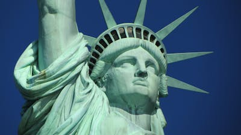

New York City : Statue de la Liberté et Ellis Island en ferry
à bord du ferry et profitez d'une visite autonome de la statue de la Liberté et d'Ellis Island
depuis le New Jersey. Visitez Liberty Island, explorez le musée de l'immigration d'Ellis Island et
apprenez des faits fascinants en chemin. Débutez votre expérience en partant de Liberty State Park,
situé à Jersey City, NJ, et facilement accessible en voiture. Une fois au lieu de rendez-vous, vous
n'avez pas besoin de faire la queue grâce à votre billet acheté à l'avance. Embarquez à bord du ferry
et admirez les vues impressionnantes sur la statue de la Liberté et la ligne d'horizon de New York.
Pour planifier votre journée, prenez note des heures de retour du ferry. Votre billet vous donne accès à
2 attractions : Ellis Island et Liberty Island (où se trouve la statue de la Liberté). À votre arrivée
sur Ellis Island, récupérez votre audioguide multilingue au musée de l'immigration. Ensuite, explorez
ce qui fut le poste d'immigration le plus fréquenté d'Amérique pendant plus de 62 ans. Marchez dans
les pas des millions de personnes venues du monde entier qui sont passées par ici, à la recherche d'un
nouveau départ et d'une nouvelle vie pour leur famille en Amérique. Grâce à l'accès aux dossiers de
l'American Family Immigration History Center, vous pouvez parcourir tous les manifestes des navires
qui sont passés par Ellis Island. Profitez de cette expérience unique pour faire quelques recherches
sur votre histoire familiale. Une fois prêt ou prête à découvrir Liberty Island, déposez votre audioguide
et retournez au ferry. À votre arrivée sur Liberty Island, récupérez votre audioguide multilingue et
découvrez l'histoire de la statue de la Liberté. Les enfants ont également la possibilité de profiter
de commentaires spéciaux lors de cette visite autonome. Une fois votre visite terminée, reprenez le
ferry pour retourner à votre point de départ.
CENTRAL PARK
Impossible d’aller à New York sans se balader dans le poumon vert de la ville : Central Park. On aime imaginer
les New-yorkais en train d’y faire leur footing ou bien faire une sieste sur la pelouse bien verte du parc. C’est
un super endroit pour s’imprégner du côté décontracté de la ville !Avec ses 4 km de long et ses 800 m de large,
on peut vite y passer des heures et s’y perdre. Pour ne rien rater des petits secrets de Central Park.
TRAVERSER LE BROOKLYN BRIDGE
Le Brooklyn Bridge est le pont qui relie Brooklyn et Manhattan. Inauguré en 1883, il mesure 2 km et se compose de
2 étages : un réservé aux véhicules et un pour les piétons et cyclistes. Traverser le Brooklyn Bridge est donc
possible et même très recommandé ! Son architecture ainsi que les points de vue qu’il donne sont à couper le souffle.
Le traverser vous permettra également de vous rendre dans le quartier de Brooklyn Heights, où se situe le Brooklyn
Bridge Park. Ce parc, sur les hauteurs de Brooklyn, vous offrira une des meilleures vues sur la skyline de Manhattan.
Sortez vos appareils photos, le lieu est très photogénique, ce n’est pas pour rien que s’y déroulent nos séances photos
à New York !Et si vous souhaitez en savoir plus sur l’histoire du Brooklyn Bridge et comprendre comment il a joué un rôle très
important dans le développement de New York, on ne peut que vous conseiller de suivre nos guides locaux pour une super
visite guidée.